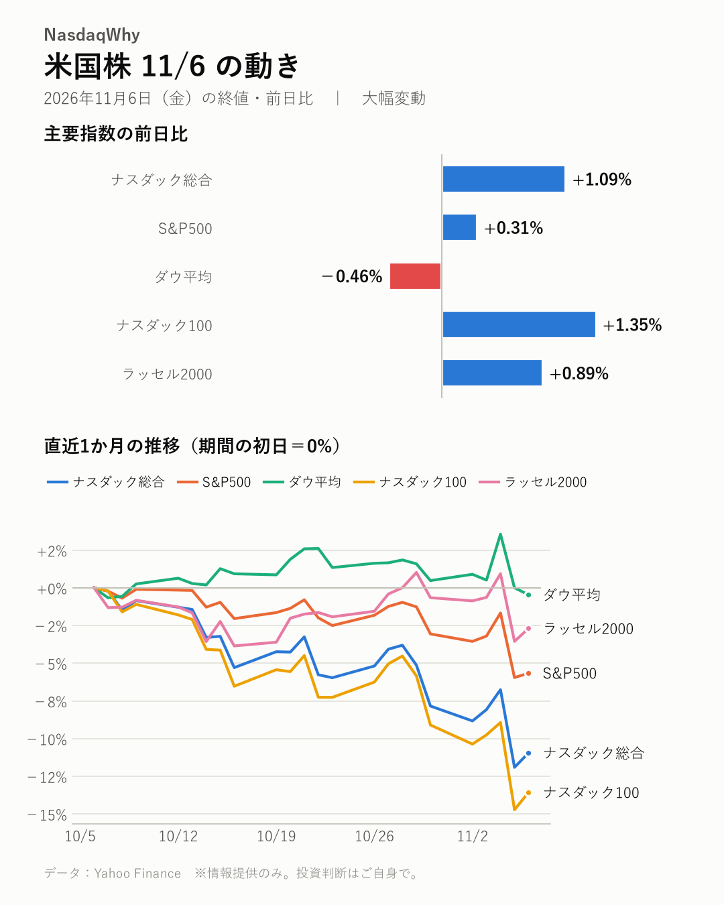
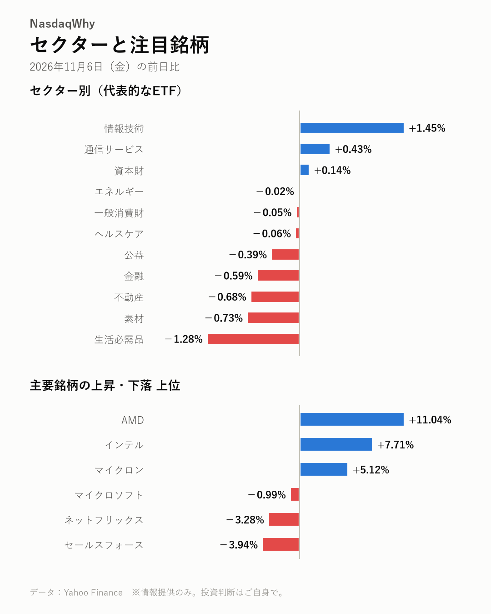

11/6の米国株：前日に急落した半導体株が買い戻され、ナスダック総合は+1.09%と反発した。ダウ平均は-0.46%と続落した。
2026年11月6日（金）の米国市場（日本時間の翌朝更新） ｜ 大幅変動

主要指数
| 名前 | 終値 | 前日比 | 騰落率 |
|---|---|---|---|
| ナスダック総合 | 24,579.42 | +264.42 | +1.09% |
| S&P500 | 7,376.86 | +23.13 | +0.31% |
| ダウ平均 | 51,285.73 | -237.33 | -0.46% |
| ナスダック100 | 26,989.99 | +360.18 | +1.35% |
| ラッセル2000 | 2,754.11 | +24.22 | +0.89% |
なぜ動いた？
- 前日に記録的な下げを見せた半導体株に押し目買いが入った。マイクロンやAMDが上げを主導した。（出典：Yahoo Finance Singapore、24/7 Wall St.、Benzinga、NDTV Profit）
- AMDは市場予想を上回る決算を示した。データセンター事業の拡大見通しも買いの手がかりになった。（出典：Yahoo Finance、TradingView、Benzinga）
- 前日の売りはAI規制への警戒と中間選挙後の売りが重なったもので、行き過ぎとの見方が出た。（出典：Yahoo Finance、TIKR.com、TIKR.com、TipRanks）
深掘り：大きく動いた背景
半導体株が大きく買い戻された。前日の売りの引き金はAI規制への警戒だ。中間選挙後のリスク回避も重なった。半導体株は数年ぶりの下げ幅を記録していた。 反転の先頭に立ったのはAMDだ。株価は+11.04%と急伸した。市場予想を上回る決算に加え、データセンター部門の売り上げが大きく伸びた。リサ・スーCEOは、AIデータセンター事業が来年に大きく拡大するとの見通しを示した。AIをめぐる市場の見方は「近視眼的」だとも語った。 買い戻しはメモリーや製造装置にも広がった。マイクロンは+5.12%、インテルは+7.71%と大きく値を戻した。TradingViewによると、アプライド・マテリアルズやKLAも買われた。エヌビディアは+2.78%と上げた。インテルについては、前日の下げは行き過ぎとの指摘がある。 相場全体の地合いは一様ではない。ダウ平均は-0.46%と下げ、生活必需品や不動産が売られた。MarketWatchは、アナリストが一段の値動きの荒さを警戒していると伝えた。AI関連株の反発が一時的なものか、見極める局面との見方もある。
セクター
情報技術が+1.45%と上げを主導し、通信サービスも小高い。生活必需品は-1.28%と下げが目立ち、素材や不動産も軟調だった。ディフェンシブ株の下げに明確な材料は見当たらない。
- 騰落率の高い順：情報技術 +1.45%、通信サービス +0.43%、資本財 +0.14%
- 騰落率の低い順：生活必需品 -1.28%、素材 -0.73%、不動産 -0.68%

注目銘柄
AMDは+11.04%と急伸した。好決算と事業拡大の見通しが買いを呼んだ。インテルは+7.71%、マイクロンは+5.12%と大きく値を戻した。セールスフォースは-3.94%と下げたが、明確な材料は見当たらない。
- 上昇：AMD（AMD）+11.04%、インテル（INTC）+7.71%、マイクロン（MU）+5.12%
- 下落：セールスフォース（CRM）-3.94%、ネットフリックス（NFLX）-3.28%、マイクロソフト（MSFT）-0.99%
半導体トピック
- マイクロンはHBM偏重で粗利益率が圧迫され、品不足は長引くとの分析（BigGo Finance）
- メモリー不足の波及が、マイクロン株の重荷になったとの指摘（Investor's Business Daily）
- アプライド・マテリアルズやKLAなど製造装置株が反発（TradingView）
関連市場
| 名前 | 終値 | 前日比 | 騰落率 |
|---|---|---|---|
| 米10年債利回り | 4.859% | +0.022pt | ― |
| ドル円 | 158.49 | +0.14 | +0.09% |
| 金先物 | 4,073.90 | -39.60 | -0.96% |
| 原油先物(WTI) | 90.47 | -0.05 | -0.06% |
| ビットコイン | 75,678.20 | -263.92 | -0.35% |
米10年債利回りは4.859%%へ上昇した。ドル円は158.49円円と小幅な円安。金先物は-0.96%と下げ、原油先物(WTI)はほぼ横ばい。ビットコインは-0.35%。
今週の振り返り
- ナスダック総合：週間 -3.37%
- S&P500：週間 -2.68%
- ダウ平均：週間 -0.94%
- ナスダック100：週間 -4.91%
- ラッセル2000：週間 -2.05%
今週はハイテク株の下げがきつかった。ナスダック総合は週間で-3.37%、ナスダック100は-4.91%。S&P500も-2.68%と下げた。ダウ平均の-0.94%より下げ幅は大きい。 重荷になったのは週後半の急落だ。中間選挙後の売りとAI規制への警戒が重なり、半導体株が崩れた。AMDは強い売上見通しを示したにもかかわらず売られた。マイクロンなどメモリー株も大きく下げた。新たなデータセンター規制がAI需要を冷やすとの懸念も出た。 最終日は押し目買いが入り、半導体株は反発した。ただ週間の下げを埋めるには至らず、ラッセル2000も-2.05%と軟調だった。 来週以降は、半導体株の反発が続くかが焦点になる。
今後の注目
- 半導体株の反発が続くか。アナリストは一段の値動きの荒さを警戒している（MarketWatch）
- 新たなデータセンター規制がAI需要にどう響くか（Yahoo Finance）
- 12/9（水） FOMCの金融政策発表（公式発表）
出典（見出し）
- Yahoo Finance Singapore：Nvidia, AMD, and Micron stocks lead chip sector higher following worst sell-off since 2020（記事）
- 24/7 Wall St.：AMD Jumps 8%, Intel and NVIDIA Climb 5% as Chip Stocks Rebound From Worst Sell-Off Since 2020（記事）
- Benzinga：Micron, AMD, SanDisk Lead AI Stock Bounce as Investors Buy the Dip（記事）
- NDTV Profit：Nvidia, AMD Lead Chip Stock Rebound After Wall Street's Worst Tech Selloff In 19 Months（記事）
- Yahoo Finance：‘Everyone Needs Compute’: Lisa Su Sees AMD’s AI Data Center Business More Than Doubling in 2027 as Wedbush Backs $600 Target（記事）
- TradingView：Tech ETFs to Buy as AMD Tops Q3 Earnings, Data Center Revenues Up 97%（記事）
- Benzinga：AMD Shares Jump 5.28% Premarket After Revenue and Earnings Beat Estimates - Advanced Micro Devices (NASDA（記事）
- Yahoo Finance：AMD Tumbles 13%, NVIDIA Slides 7% as AI Regulation Fears Hit Chip Stocks; Intel Sinks 8%（記事）
- TIKR.com：AMD Soars 10%, Intel Up 7% as Chip Stocks Rebound From Election Sell-Off（記事）
- TIKR.com：Bloom Energy Rises 2%, AMD Up 8% as AI Stocks Rebound From Midterm Rout（記事）
- TipRanks：Intel Stock’s (INTC) Deep Sell-Off Shows Signs of an Overreaction（記事）
- BigGo Finance：Micron's Memory Revenue Catches Up to TSMC, but Gross Margin Dragged Down by HBM: Why the Shortage Could Last Until 2028（記事）
- Investor's Business Daily：Micron Stock Plunges As Memory-Chip Shortages Cause Ripple Effects（記事）
- TradingView：Amtech, Intel, Applied Materials, AMD, and KLA Corporation shares are soaring, what you need to know（記事）
- MarketWatch：Nvidia, AMD and other chip stocks rebound — but is relief from the ‘violent’ selloff only temporary?（記事）
- Yahoo Finance：Could Micron Technology (MU) Face Slower AI Demand From New Data Center Rules?（記事）
データ：Yahoo Finance